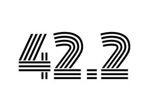

Trade Mark Journal No.2025/016 18 April 2025
UK00004184842 5 April 2025 (18,21,25,35)

- Class 18
- Holdalls for sports clothing; Bags for sports clothing; Sports bags; Bags for sports; All-purpose sports bags.
- Class 21
- Water bottles; Plastic water bottles; Aluminum water bottles; Water bottles for bicycles; Plastic water bottles [empty]; Empty water bottles for bicycles; Aluminum water bottles, empty; Bottles; Drinking bottles; Water bottles sold empty; Water bottles for bicycles, sold empty; Glass bottles; Reusable stainless steel water bottles; Drinking bottles for sports; Plastic bottles; Reusable stainless steel water bottles sold empty; Coffee cups; Tea cups; Coffee mugs; Cups; Cups and mugs; Drinking cups; Glass cups; Sippy cups; Plastic cups; Tea pots; Travel mugs; Mugs made of earthenware; Mugs made of plastic; Reusable plastic water bottles sold empty; Empty spray bottles; Mugs; Beer mugs; Glass mugs; Vacuum mugs; Paper cups; Cardboard cups.
- Class 25
- Clothing for sports; Sports clothing; Clothes for sports; Jackets being sports clothing; Sports garments; Articles of sports clothing; Sports clothing [other than golf gloves]; Footwear for sports; Sports footwear; Clothes for sport; Athletic clothing; Sports shirts; Sports jackets; Sports shoes; Sports jerseys and breeches for sports; Sports wear; Clothing; Triathlon clothing; Footwear for use in sport; Footwear for sport; Sports jerseys; Clothing for cycling; Leisure clothing; Sports bras; Sports vests; Sports pants; Sports bibs; Jerseys [clothing]; Clothing for leisure wear; Moisture-wicking sports shirts; Sports socks; Sport shirts; Sports singlets; Jackets [clothing]; Sport shoes; Sports headgear [other than helmets]; Athletics footwear; Headbands [clothing]; Knitwear [clothing]; Moisture-wicking sports bras; Shorts [clothing]; Casual clothing; Moisture-wicking sports pants; Water-resistant clothing; Articles of clothing; Clothing for cyclists; Athletic footwear; Clothing for children; Jackets (Stuff -) [clothing]; Stuff jackets [clothing]; Wristbands [clothing]; Sportswear; Waterproof clothing; Sports caps; Windproof clothing; Parts of clothing, footwear and headgear; Visors [clothing]; Woolen clothing; Men's clothing.
- Class 35
- Retail services relating to clothing; Retail services connected with the sale of clothing and clothing accessories; Online retail services relating to clothing; Online retail store services relating to clothing; Mail order retail services connected with clothing accessories; Retail services in relation to clothing accessories; Mail order retail services for clothing; Mail order retail services for clothing accessories; Promotion of goods and services through sponsorship; Promoting the sale of goods and services of others through promotional events; Retail services in relation to smartwatches; Retail services in relation to headgear.
Nicholas Houlton